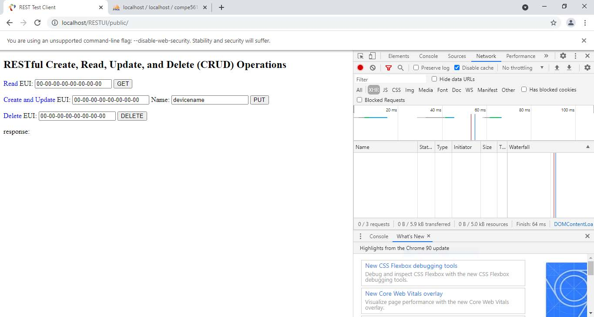
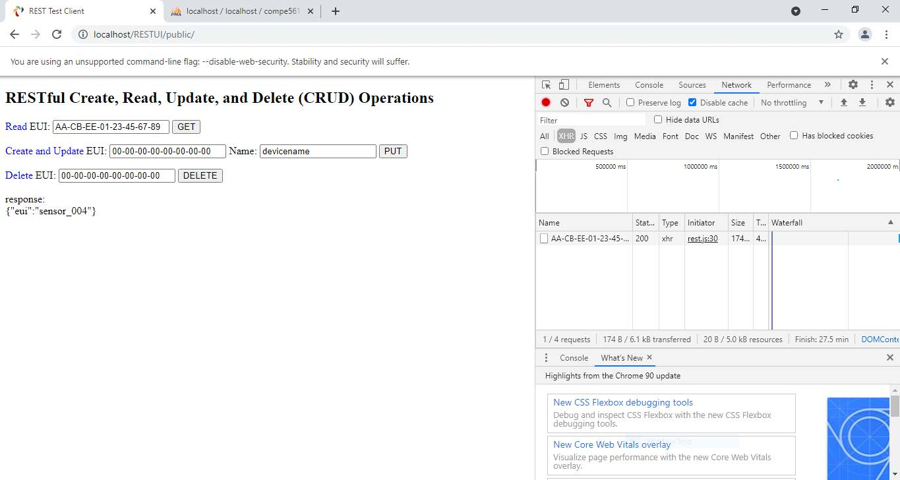

Description
In this project, the goal was to demonstrate invocations of different operations in a web browser. This page will briefly go over the procedure starting from an HTML page that takes the parameters and shows that each web service method is shown in Chrome's built in Developer Tools. A Database.java file will provide operations including HTTP PUT, GET, and Delete Methods. These operations work concurrently with data that is collected in SQL! This simulates methods used to access a hypothetical database with a specific device name and EUI.
Rendered index.html
This is the basic User Interface that will demonstrate the RESTful Create, Read, Update, and Delete (CRUD) operations in Java web services. The Chrome Developer tools page is also shown.
Invoking CRUD with GET
With GET method, a specific EUI was retrieved from the database. We can see that this was a valid EUI since the response outputs "sensor_004. Indicating that this specific EUI does exist in the database. Additionally, it is also shown that the status in Chrome Developer shows 200, this means that my GET request went through! The screenshots below show a demonstration of the other methods that were implemented.